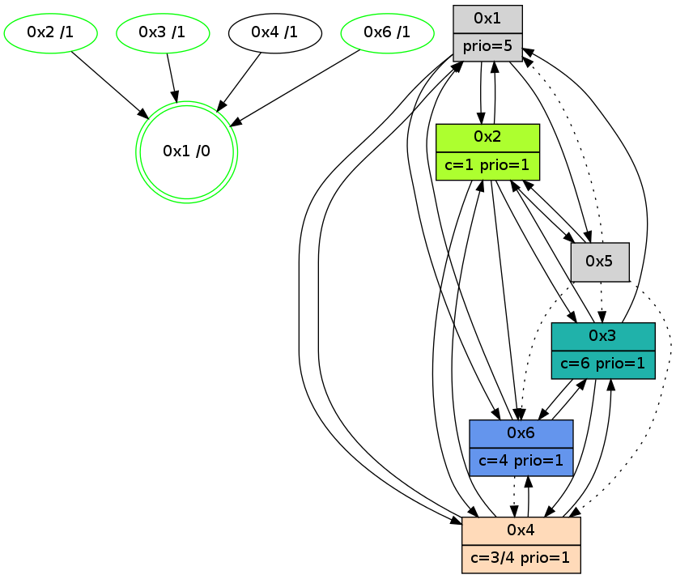

>> << IDX [start] -100 -25 -5 +0 +5 +25 +100 [845.099362135]
 Previous packets
----------------------------------------------------------------------
840.178285 beacon01(adaf) #0 coord=01,02,05,03,04,06 cycle=432.0ms assoc
-- color-indic=1 64 4c 4e
840.188249 beacon02(adaf) #0 coord=01,02,05,03,04,06 cycle=432.0ms assoc 64 1d b1
840.198245 beacon05(adaf) #0 coord=01,02,05,03,04,06 cycle=432.0ms assoc 64 bb 9b
840.208245 beacon03(adaf) #0 coord=01,02,05,03,04,06 cycle=432.0ms assoc 64 27 bf
840.218246 beacon04(adaf) #0 coord=01,02,05,03,04,06 cycle=432.0ms assoc 64 81 95
840.228247 beacon06(adaf) #0 coord=01,02,05,03,04,06 cycle=432.0ms assoc 64 f5 89
840.240776 [Color(6) seq=70 @0:0 color=4 prio=1 c=0,1,2,5,6;3]
840.244536 [Color(3) seq=40 @0:0 color=6 prio=1 c=1,3,4,5;0,2]
----------------------------------------------------------------------
840.670392 beacon01(adaf) #0 coord=01,02,05,03,04,06 cycle=432.0ms assoc
-- color-indic=1 64 12 2f
840.680353 beacon02(adaf) #0 coord=01,02,05,03,04,06 cycle=432.0ms assoc 64 43 d0
840.690353 beacon05(adaf) #0 coord=01,02,05,03,04,06 cycle=432.0ms assoc 64 e5 fa
840.700355 beacon03(adaf) #0 coord=01,02,05,03,04,06 cycle=432.0ms assoc 64 79 de
840.710353 beacon04(adaf) #0 coord=01,02,05,03,04,06 cycle=432.0ms assoc 64 df f4
840.720356 beacon06(adaf) #0 coord=01,02,05,03,04,06 cycle=432.0ms assoc 64 ab e8
840.732024 [Hello(4): seq=645 sym=2,1,3 sysInfo=hasWarning stat=2:1,9,10,2/1:1,3,1,0/3:10,11,11,3]
840.734557 [Hello(2): seq=1133 sym=6,4,1,3,5 sysInfo=hasWarning,coloring-mode-on,ColoringModeIndicationCalled stat=6:13,8,13,4/4:4,3,9,2/1:3,9,0,1/3:15,5,9,1/5:1,0,0,0]
840.737551 [Hello(3): seq=643 sym=4,1 asym=6 sysInfo=hasWarning stat=4:9,0,6,2/1:12,0,14,1/6:8,1,4,11]
840.739575 [Color(2) seq=69 @0:0 color=1/2 prio=1 c=0,2,3,4,5,6]
840.743790 [Hello(1): seq=544 sym=2,3,4,6,5 sysInfo=hasWarning,coloring-mode-on,ColoringModeRequestCalled stat=2:15,4,3,2/3:3,3,4,1/4:5,4,12,2/6:8,14,12,2/5:0,0,0,0]
840.746086 [STC(1) #0.82 new-neigh,tree-change,inconsistent-stability,stable,to-color d=0]
840.749939 [Color(1) seq=71 @0:0 prio=5 c=1,4,6;0,2,3,5]
----------------------------------------------------------------------
841.162500 beacon01(adaf) #0 coord=01,02,05,03,04,06 cycle=432.0ms assoc
-- color-indic=1 64 d6 40
841.172460 beacon02(adaf) #0 coord=01,02,05,03,04,06 cycle=432.0ms assoc 64 87 bf
841.182462 beacon05(adaf) #0 coord=01,02,05,03,04,06 cycle=432.0ms assoc 64 21 95
841.192461 beacon03(adaf) #0 coord=01,02,05,03,04,06 cycle=432.0ms assoc 64 bd b1
841.202462 beacon04(adaf) #0 coord=01,02,05,03,04,06 cycle=432.0ms assoc 64 1b 9b
841.212462 beacon06(adaf) #0 coord=01,02,05,03,04,06 cycle=432.0ms assoc 64 6f 87
841.224005 [STC(4)->1 #0.82 new-neigh,tree-change,inconsistent-stability,to-color d=1]
841.226098 [STC(3)->1 #0.82 new-neigh,tree-change,inconsistent-stability,stable,to-color d=1]
841.227729 [STC(2)->1 #0.82 new-neigh,tree-change,inconsistent-stability,stable,to-color d=1]
841.230438 [Color(3) seq=41 @0:0 color=6 prio=1 c=1,3,4,5;0,2]
----------------------------------------------------------------------
841.654607 beacon01(adaf) #0 coord=01,02,05,03,04,06 cycle=432.0ms assoc
-- color-indic=1 64 9a f0
841.664569 beacon02(adaf) #0 coord=01,02,05,03,04,06 cycle=432.0ms assoc 64 cb 0f
841.674568 beacon05(adaf) #0 coord=01,02,05,03,04,06 cycle=432.0ms assoc 64 6d 25
841.684569 beacon03(adaf) #0 coord=01,02,05,03,04,06 cycle=432.0ms assoc 64 f1 01
841.694569 beacon04(adaf) #0 coord=01,02,05,03,04,06 cycle=432.0ms assoc 64 57 2b
841.704569 beacon06(adaf) #0 coord=01,02,05,03,04,06 cycle=432.0ms assoc 64 23 37
841.716235 [Hello(4): seq=646 sym=2,1,3 sysInfo=hasWarning stat=2:2,10,11,2/1:2,4,2,0/3:11,12,12,3]
841.718777 [Hello(2): seq=1134 sym=6,4,1,3,5 sysInfo=hasWarning,coloring-mode-on,ColoringModeIndicationCalled stat=6:13,9,13,4/4:5,3,9,2/1:4,10,1,1/3:15,5,9,1/5:1,0,0,0]
841.721679 [Hello(3): seq=644 sym=4,1 sysInfo=hasWarning stat=4:9,0,7,2/1:13,1,15,1]
841.723794 [Color(2) seq=70 @0:0 color=1 prio=1 c=0,2,3,4,5,6]
841.725396 [Hello(6): seq=559 sym=3,1,2 asym=4 sysInfo=hasWarning,coloring-mode-on,ColoringModeIndicationCalled stat=3:0,1,1,0/1:4,7,3,1/2:12,8,12,5/4:4,0,9,2]
841.728634 [Hello(1): seq=545 sym=2,4,6,5 sysInfo=hasWarning,coloring-mode-on,ColoringModeRequestCalled stat=2:15,4,4,2/4:6,4,13,2/6:8,15,13,2/5:0,0,0,0]
841.731134 [Color(1) seq=72 @0:0 prio=5 c=1,4,6;0,2,3,5]
----------------------------------------------------------------------
842.146715 beacon01(adaf) #0 coord=01,02,05,03,04,06 cycle=432.0ms assoc
-- color-indic=1 64 5e 9f
842.156677 beacon02(adaf) #0 coord=01,02,05,03,04,06 cycle=432.0ms assoc 64 0f 60
842.166676 beacon05(adaf) #0 coord=01,02,05,03,04,06 cycle=432.0ms assoc 64 a9 4a
842.176677 beacon03(adaf) #0 coord=01,02,05,03,04,06 cycle=432.0ms assoc 64 35 6e
842.186677 beacon04(adaf) #0 coord=01,02,05,03,04,06 cycle=432.0ms assoc 64 93 44
842.196677 beacon06(adaf) #0 coord=01,02,05,03,04,06 cycle=432.0ms assoc 64 e7 58
842.209211 [Color(6) seq=72 @0:0 color=4 prio=1 c=0,1,2,5,6;3]
842.212976 [Color(3) seq=42 @0:0 color=6 prio=1 c=1,3,4,5;0,2]
----------------------------------------------------------------------
842.638823 beacon01(adaf) #0 coord=01,02,05,03,04,06 cycle=432.0ms assoc
-- color-indic=1 64 13 98
842.648784 beacon02(adaf) #0 coord=01,02,05,03,04,06 cycle=432.0ms assoc 64 42 67
842.658784 beacon05(adaf) #0 coord=01,02,05,03,04,06 cycle=432.0ms assoc 64 e4 4d
842.668785 beacon03(adaf) #0 coord=01,02,05,03,04,06 cycle=432.0ms assoc 64 78 69
842.678745 beacon04(adaf) #0 coord=01,02,05,03,04,06 cycle=432.0ms assoc 64 de 43
842.688786 beacon06(adaf) #0 coord=01,02,05,03,04,06 cycle=432.0ms assoc 64 aa 5f
842.700418 [Hello(4): seq=647 sym=2,1,6,3 sysInfo=hasWarning stat=2:3,11,11,2/1:3,5,2,0/6:0,0,0,0/3:12,13,12,3]
842.703089 [Hello(2): seq=1135 sym=6,4,1,3,5 sysInfo=hasWarning,coloring-mode-on,ColoringModeIndicationCalled stat=6:14,9,13,4/4:6,3,9,2/1:5,11,1,1/3:15,6,9,1/5:1,0,0,0]
842.705911 [Hello(3): seq=645 sym=6,4,1 sysInfo=hasWarning stat=6:0,0,0,0/4:9,0,7,2/1:14,2,15,1]
842.708084 [Color(2) seq=71 @0:0 color=1 prio=1 c=0,2,3,4,5,6]
842.709622 [Hello(6): seq=560 sym=3,1 asym=4 sysInfo=hasWarning,coloring-mode-on,ColoringModeIndicationCalled stat=3:0,2,1,0/1:5,8,3,1/4:4,0,9,2]
842.718353 [Hello(1): seq=546 sym=2,4,6,5 sysInfo=hasWarning,coloring-mode-on,ColoringModeRequestCalled stat=2:15,4,4,2/4:7,4,13,2/6:8,15,13,2/5:0,0,0,0]
842.722466 [Color(1) seq=73 @0:0 prio=5 c=1,4,6;0,2,3,5]
----------------------------------------------------------------------
843.130931 beacon01(adaf) #0 coord=01,02,05,03,04,06 cycle=432.0ms assoc
-- color-indic=1 64 d7 f7
843.140891 beacon02(adaf) #0 coord=01,02,05,03,04,06 cycle=432.0ms assoc 64 86 08
843.150892 beacon05(adaf) #0 coord=01,02,05,03,04,06 cycle=432.0ms assoc 64 20 22
843.160892 beacon03(adaf) #0 coord=01,02,05,03,04,06 cycle=432.0ms assoc 64 bc 06
843.170893 beacon04(adaf) #0 coord=01,02,05,03,04,06 cycle=432.0ms assoc 64 1a 2c
843.180893 beacon06(adaf) #0 coord=01,02,05,03,04,06 cycle=432.0ms assoc 64 6e 30
843.193430 [Color(6) seq=73 @0:0 color=4 prio=1 c=0,1,2,5,6;3]
843.195284 [STC(1) #0.83 new-neigh,tree-change,inconsistent-stability,stable,to-color d=0]
843.197199 [Color(3) seq=43 @0:0 color=6 prio=1 c=1,3,4,5;0,2]
----------------------------------------------------------------------
843.623038 beacon01(adaf) #0 coord=01,02,05,03,04,06 cycle=432.0ms assoc
-- color-indic=1 64 9b 47
843.632999 beacon02(adaf) #0 coord=01,02,05,03,04,06 cycle=432.0ms assoc 64 ca b8
843.642999 beacon05(adaf) #0 coord=01,02,05,03,04,06 cycle=432.0ms assoc 64 6c 92
843.653000 beacon03(adaf) #0 coord=01,02,05,03,04,06 cycle=432.0ms assoc 64 f0 b6
843.662999 beacon04(adaf) #0 coord=01,02,05,03,04,06 cycle=432.0ms assoc 64 56 9c
843.673001 beacon06(adaf) #0 coord=01,02,05,03,04,06 cycle=432.0ms assoc 64 22 80
843.687000 [Hello(2): seq=1136 sym=6,4,1,3,5 sysInfo=hasWarning,coloring-mode-on,ColoringModeIndicationCalled stat=6:15,9,13,4/4:7,3,9,2/1:6,12,2,1/3:15,7,9,1/5:1,0,0,0]
843.693442 [STC(4)->1 #0.83 new-neigh,tree-change,inconsistent-stability,to-color d=1]
843.696361 [Color(1) seq=74 @0:0 prio=5 c=1,4,6;0,2,3,5]
843.699946 [Hello(6): seq=561 sym=3,1 asym=4 sysInfo=hasWarning,coloring-mode-on,ColoringModeIndicationCalled stat=3:0,3,1,0/1:6,9,4,1/4:4,0,9,2]
843.702693 [STC(6)->1 #0.83 new-neigh,tree-change,inconsistent-stability,stable,to-color d=1]
843.711519 [Color(2) seq=72 @0:0 color=1 prio=1 c=0,2,3,4,5,6]
----------------------------------------------------------------------
844.115146 beacon01(adaf) #0 coord=01,02,05,03,04,06 cycle=432.0ms assoc
-- color-indic=1 64 5f 28
844.125107 beacon02(adaf) #0 coord=01,02,05,03,04,06 cycle=432.0ms assoc 64 0e d7
844.135106 beacon05(adaf) #0 coord=01,02,05,03,04,06 cycle=432.0ms assoc 64 a8 fd
844.145108 beacon03(adaf) #0 coord=01,02,05,03,04,06 cycle=432.0ms assoc 64 34 d9
844.155108 beacon04(adaf) #0 coord=01,02,05,03,04,06 cycle=432.0ms assoc 64 92 f3
844.165107 beacon06(adaf) #0 coord=01,02,05,03,04,06 cycle=432.0ms assoc 64 e6 ef
844.177636 [Color(6) seq=74 @0:0 color=4 prio=1 c=0,1,2,5,6;3]
844.181399 [Color(3) seq=44 @0:0 color=6 prio=1 c=1,3,4,5;0,2]
----------------------------------------------------------------------
844.607253 beacon01(adaf) #0 coord=01,02,05,03,04,06 cycle=432.0ms assoc
-- color-indic=1 64 27 85
844.617215 beacon02(adaf) #0 coord=01,02,05,03,04,06 cycle=432.0ms assoc 64 76 7a
844.627214 beacon05(adaf) #0 coord=01,02,05,03,04,06 cycle=432.0ms assoc 64 d0 50
844.637214 beacon03(adaf) #0 coord=01,02,05,03,04,06 cycle=432.0ms assoc 64 4c 74
844.647214 beacon04(adaf) #0 coord=01,02,05,03,04,06 cycle=432.0ms assoc 64 ea 5e
844.657215 beacon06(adaf) #0 coord=01,02,05,03,04,06 cycle=432.0ms assoc 64 9e 42
844.668887 [Hello(4): seq=649 sym=2,1,6,3 sysInfo=hasWarning stat=2:4,13,11,2/1:4,7,3,0/6:2,0,1,0/3:13,15,12,3]
844.671558 [Hello(2): seq=1137 sym=6,4,1,3,5 sysInfo=hasWarning,coloring-mode-on,ColoringModeIndicationCalled stat=6:15,9,13,4/4:7,3,9,2/1:6,12,2,1/3:15,8,9,1/5:1,0,0,0]
844.674063 [Color(1) seq=75 @0:0 prio=5 c=1,4,6;0,2,3,5]
844.676574 [Color(2) seq=73 @0:0 color=1 prio=1 c=0,2,3,4,5,6]
844.678005 [Hello(3): seq=647 sym=6,4,1,2 sysInfo=hasWarning stat=6:2,0,1,0/4:9,0,8,2/1:15,4,15,1/2:0,1,0,0]